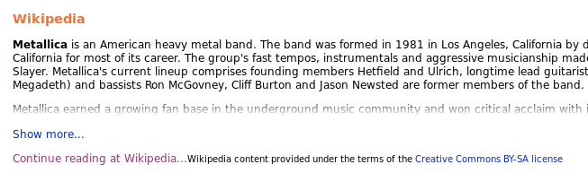
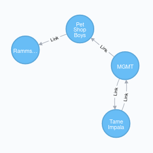
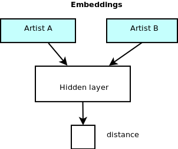
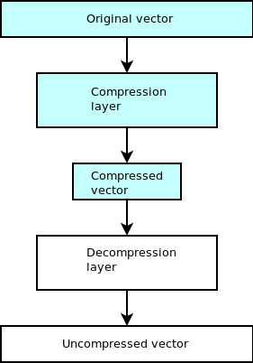

In this post I want to solve the problem of music recommendation. This is a problem where it is easy to see how collecting user data can be useful.
For example you might calculate the probability of an individual user enjoying an artist given their listening history and the history of other similar users.
Since I am not Spotify, Google, or Apple (and I don’t want to be), I cannot use data about users to solve this problem.
TL;DR
Building an all-pairs shortest path matrix between pages on Wikipedia turns out to be a reasonable model for musical similarity with some non-traditional dimensionality reduction.
Scroll to the end for some results.
Defining the problem
For the purposes of this post, I will define the problem as the following question:
Given a musician or band A, who are some other similar artists?
By the end of this post I will have explained one way to build a model that can answer this question without harvesting data from people.
The quest begins
To start solving this problem I need two things:
- a list of musical artists.
- some notion of similarity between artists
Okay, solving number one seems easy right? Let’s skip that part.
Similarity of artists
There are a lot of places to get information on musicians. For this project I focused on two sources in particular:
Both of these sources of data offer free use of their data. Wikipedia uses a Creative Commons license and MusicBrainz releases their data in the public domain.
After digging through MusicBrainz for a while, I couldn’t find much data that relates two artists (especially reliable data, a lot of it is incomplete or missing.) They do have ratings for artists which could be useful, but many artists have no ratings or very few ratings so using this as a data source would be noisy and unreliable.
Wikipedia is much easier. Every page links to other pages so we can easily build a graph of links between artists on Wikipedia. The distance between two artists might say something about how similar they are. So let’s do that.
Okay we solved the hard problem. Let’s solve the easy problem now.
Getting a list of artists
Now that we know we want to model a graph of Wikipedia pages, we need to gather a list of Wikipedia pages that correspond to musical artists. These don’t correspond to the band names because the Wikipedia page for ‘Scorpions’ is about the anthropod. For the band ‘Scoprions’ you have to look up ‘Scorpions (band)’.
Easy. Let’s use the links on MusicBrainz.

Let’s just spin up a MusicBrainz docker image and pull a list of artists and their Wikipedia pages from the Postgres database.
The query to get the URL for Scorpions looks like:
select artist."name", url.url
from artist, url, l_artist_url
where artist.id = l_artist_url.entity0
and url.id = l_artist_url.entity1
and url.url like '%en.wikipedia%'
and artist."name" = 'Scorpions';Aaannd we get:
Scorpions https://en.wikipedia.org/wiki/Scorpions_(band)
Let’s try one more band to be sure:
select artist."name", url.url
from artist, url, l_artist_url
where artist.id = l_artist_url.entity0
and url.id = l_artist_url.entity1
and url.url like '%en.wikipedia%'
and artist."name" = 'Metallica';Nothing. There’s no Wikipedia link in the MusicBrainz database for Metallica.
Then what is this:

…apparently these Wikipedia samples are generated on the fly
by appeding /wikipedia-extract to the page URL
Alright fine. I can’t use MusicBrainz to get the data I need. Let’s see what I can scrape from Wikipedia.
Possible options:
Occupation from the info box on the right.Too many possibilities.Some kind of search for keywords.Too unpredictable or unreliable.Categories the page belongs to.Way too many possibilities.- Hold on…what’s this
Revelation: Wikipedia has MusicBrainz links on artist pages
A few clicks later and the problem is solved
Once I use the Categorymembers API
I end up with a 98470 line artists.txt file.
Building the graph
So my first instinct, and maybe yours too, is to go to the
Wikipedia data dumps and download
pagelinks.sql.gz and import it into a MySQL database.
I don’t recommend doing this because the import will take days. I spent way too long trying to figure out how to make MySQL imports faster, but in the end I abandoned that approach.
mirkonasato on GitHub had a much better idea and I just used his code to build an entire graph of Wikipedia pages in a neo4j database. It only took a few hours.
A short script later and all the Wikipedia pages with MusicBrainz pages were
tagged with {artist: true}.

Neo4j is pretty cool. I had never used it before.
Building the matrix
Remember when I said I would use the distance between two Wikipedia pages as a measure of the artist similarity? Well now I have to build that matrix. To be extra clear: the distance will count edges of the graph that connect other artists’ pages. So no edge will be counted unless the connected vertex also had a link to MusicBrainz on the Wikipedia page.
In total I will have almost 100,000 artists accounted for. This means the all-pairs shortest path matrix will be 100,000 by 100,000. It’s pretty hard to fathom how big this is so let me try to explain it in different ways:
- There are almost 1 billion entries of the matrix.
- The iPhone X has a 12 megapixel camera. Images taken by iPhone X are 83 times smaller than this matrix.
- Stored as 32 bit integers this matrix is 37GiB.
- Computing the all-pairs shortest path problem using the canonical Floyd-Warshall algorithm in O(V3) would take 1,000,000,000,000,000 operations.
Dealing with matrices this big means almost everything I do has to be GPU accelerated or it will simply take too long.
So let’s figure out what libraries I can use to GPU accelerate the all-pairs shortest path problem.
- nvGraph by Nvidia which doesn’t appear to (yet) have Python bindings and seems sparsley documented with no examples.
- gunrock which shows how you can use the Python ctypes library but doesn’t (yet) have Python bindings. And also has Python sample code for single-source shortest path which I can extend to all pairs shortest path.
Okay, I guess the choice is clear.
I setup gunrock in a Docker container, and run a script to start finding shortest paths.
Some CUDA error about being out of memory.
I guess gunrock has a memory leak because it can’t be my fault. The code I wrote should have a constant memory requirement. So I setup the script to stop and restart occasionally to clear out memory and let it run overnight. I also spent an obscene amount of time trying to optimize the Python code to save as quickly as possible.
Dimensionality reduction
At this point I am the proud owner of approximately 1 billion shortest path distances. The matrix can be thought of as samples which have features. Each row of the matrix is a sample (an artist) each of which has 100,000 features (distances to other artists). In any kind of machine learning application 100,000 features would probably be too many so we need to come up with a way to reduce the dimensions to something managable.
Scikit learn has a bunch of algorithms for this.
Unfortunately I can’t use any of them because they’re not GPU accelerated and I don’t think any of them would finish in a reasonable amount of time.
However there is scikit-cuda which is a GPU accelerated subset of scikit-learn with a similar API. They have a PCA algorithm!
…except their PCA algorithm is insufficient. Remember my matrix is 37GiB? Yeah I only have 22GB of GPU memory and their algorithm copies the matrix among other stuff it needs memory for.
Getting creative
I spent a while looking for iterative solutions for PCA and such. But the research papers are dense and my knowledge of GPU programming is limited, so I opted to get more creative with my solution to dimensionality reduction.
There are two options I experimented with:
Embeddings which I randomly initialize for each artist, then update via backpropagation in order to predict their distance in the all-pairs shortest path matrix. 
Compression whereby I train a neural network to learn the identity function by ‘compressing’ the vector into a lower-dimensional space and then decompressing it back into its original space. Then I run only the ‘compress’ step over every vector and store the results.

The first option I attempted but could not complete after I calculated it would take 10 days to complete one epoch. Each epoch has 1,000,000,000 samples to iterate over since it operates cell-by-cell.
In contrast the second option takes very little time to complete 10 epochs since each epoch only has 100,000 samples to iterate over.
To identify similar artists we can use the cosine distance between two vectors and simply return the ones with the smallest distance.
Results
It turns out the ‘compression’ method of dimensionality reduction works remarkably well.
Here are the top-10 most similar artists for a few inputs:
Scorpions (band)
1.615E-11 Christofer Johnsson
1.885E-11 Persian Risk
1.898E-11 Voivod (band)
1.915E-11 Geoff Downes
1.965E-11 The Rasmus
1.988E-11 Vinnie Vincent
1.993E-11 Goudie (band)
2.027E-11 Eddie Trunk
2.031E-11 Sword (band)
2.031E-11 Kip Winger
M83 (band)
1.740E-11 Josh Wink
1.784E-11 Dead Letter Circus
1.814E-11 Crystal Castles
1.854E-11 Iamamiwhoami
1.858E-11 Envy on the Coast
1.889E-11 Vaccine (musician)
1.893E-11 Polly Scattergood
1.917E-11 Editors (band)
1.948E-11 Skrillex
1.979E-11 The Faint
Michael Jackson
2.277E-11 Matt Giraud
2.331E-11 Mary J. Blige
2.412E-11 Liza Minnelli
2.412E-11 Siobhan Magnus
2.472E-11 Bruce Gowers
2.490E-11 Brandy Norwood
2.493E-11 Nicole Scherzinger
2.500E-11 Sanjaya Malakar
2.506E-11 Stock Aitken Waterman
2.523E-11 James Arthur
Katy Perry
2.680E-11 Eminem
2.711E-11 Pink (singer)
2.786E-11 Dave Audé
2.870E-11 Timbaland
2.911E-11 Madonna (entertainer)
2.948E-11 Junior Vasquez
3.051E-11 Kurt Hugo Schneider
3.072E-11 Ellie Goulding
3.148E-11 Lady Gaga
3.163E-11 Lorde
Eminem
2.052E-11 T.I.
2.067E-11 George Clinton (musician)
2.069E-11 Nicki Minaj
2.134E-11 Sanjaya Malakar
2.140E-11 Annie Leibovitz
2.151E-11 Miley Cyrus
2.170E-11 Dave Audé
2.173E-11 Cat Power
2.176E-11 Adam Schlesinger
2.184E-11 Raphael Saadiq
Kraftwerk
2.352E-11 Can (band)
2.756E-11 Radiohead
2.919E-11 Ben Perowsky
2.960E-11 Karlheinz Stockhausen
3.074E-11 Jack White
3.168E-11 Gustavo Cerati
3.223E-11 Anthony Marinelli
3.226E-11 KMFDM
3.238E-11 St. Vincent (musician)
3.245E-11 Joseph Arthur
Mannheim Steamroller
1.152E-11 Horrie Dargie
1.223E-11 Stephanie McIntosh
1.248E-11 Moony
1.296E-11 Steve Whitmire
1.392E-11 Barry Crocker
1.432E-11 Dominic Frontiere
1.447E-11 Amy Sky
1.529E-11 Raybon Brothers
1.553E-11 Danny Williams (singer)
1.555E-11 Graeme Connors
Metallica
2.533E-11 Audiovent
2.631E-11 Byron Stroud
2.746E-11 Jerry Cantrell
2.790E-11 Layne Staley
2.831E-11 Michael Schenker
2.838E-11 The Offspring
2.869E-11 Tony Iommi
2.873E-11 Matt Sorum
2.876E-11 James Hetfield
2.929E-11 Brian Robertson (guitarist)
Avicii
1.853E-11 Sick Individuals
1.956E-11 Jodie Harsh
1.958E-11 Syn Cole
2.022E-11 The Black Eyed Peas
2.104E-11 Birdy (singer)
2.114E-11 Bryan Ferry
2.127E-11 Hudson Mohawke
2.166E-11 4 Non Blondes
2.167E-11 Mika (singer)
2.167E-11 Deadmau5
Evaluating
Clearly the model is not perfect. I’m not sure what the intersection of Eminem fans and Miley Cyrus fans are, but it’s probably not the kind of recommendation you expect to find.
On the other hand, the results for Katy Perry would probably look good to me if I were a Katy Perry fan (I think).
I’ll leave it pretty open-ended whether or not this model works, since a lot of it is very subjective. My feeling is that it works pretty well, but probably can be improved with some more manual work cleaning up the data and with extra features in the model like genre, etc.
Conclusion
My goal was to demonstrate how one can build a music recommendation system without harvesting data from users. I wasn’t sure how well this would work, but I think it exceeded my expectations.
This basic model can probably be extended to movies, TV, etc. (I’m looking at you Netflix)